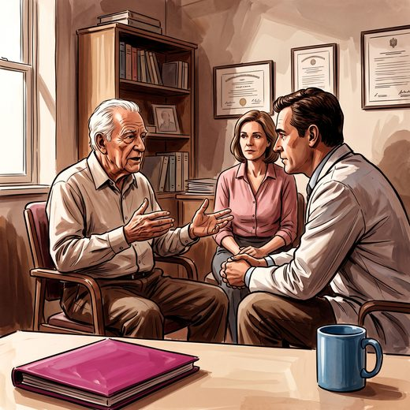

Consulta rápida à beira do leito
Condutas, doses e interações.
Referências da aula · 9
- Hampton JR, Harrison MJG, Mitchell JRA, Prichard JS, Seymour C. Relative contributions of history-taking, physical examination, and laboratory investigation to diagnosis and management of medical outpatients. Br Med J. 1975;2(5969):486-9. PMID 1148666. doi:10.1136/bmj.2.5969.486.PubMedDOI
- Inouye SK, Studenski S, Tinetti ME, Kuchel GA. Geriatric syndromes: clinical, research, and policy implications of a core geriatric concept. J Am Geriatr Soc. 2007;55(5):780-91. PMID 17493201. doi:10.1111/j.1532-5415.2007.01156.x.PubMedDOI
- Katz S, Ford AB, Moskowitz RW, Jackson BA, Jaffe MW. Studies of illness in the aged. The index of ADL: a standardized measure of biological and psychosocial function. JAMA. 1963;185:914-9. PMID 14044222.PubMed
- Lawton MP, Brody EM. Assessment of older people: self-maintaining and instrumental activities of daily living. Gerontologist. 1969;9(3):179-86. PMID 5349366.PubMed
- Pfeffer RI, Kurosaki TT, Harrah CH Jr, Chance JM, Filos S. Measurement of functional activities in older adults in the community. J Gerontol. 1982;37(3):323-9. PMID 7069156.PubMed
- 2023 American Geriatrics Society Beers Criteria® Update Expert Panel. American Geriatrics Society 2023 updated AGS Beers Criteria® for potentially inappropriate medication use in older adults. J Am Geriatr Soc. 2023;71(7):2052-81. PMID 37139824. doi:10.1111/jgs.18372.PubMedDOI
- O'Mahony D, Cherubini A, Guiteras AR, et al. STOPP/START criteria for potentially inappropriate prescribing in older people: version 3. Eur Geriatr Med. 2023;14(4):625-32. PMID 37256475. doi:10.1007/s41999-023-00777-y.PubMedDOI
- Reuben DB, Tinetti ME. Goal-oriented patient care — an alternative health outcomes paradigm. N Engl J Med. 2012;366(9):777-9. PMID 22375966.PubMed
- Freitas EV, Py L, organizadores. Tratado de Geriatria e Gerontologia. 5ª ed. Rio de Janeiro: Guanabara Koogan; 2022.
Documentos oficiais
Leis e publicações do Ministério da Saúde sobre o cuidado da pessoa idosa, de acesso livre.
Abrir os documentos